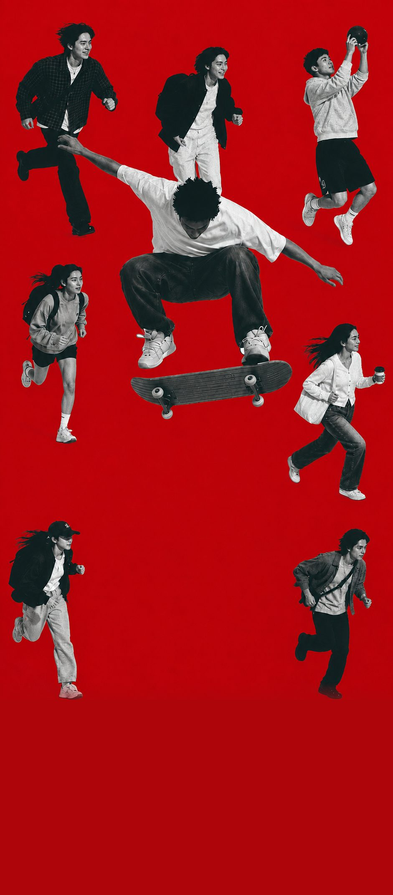

오늘 {{ todayTotal }}명이 이 자리에서 선포했습니다
{{ streakLabel }}
{{ doneLine }}
어떻게 선포할까요
읽기 방식을 선택하세요
아직 담아둔 기도문이 없습니다.
기도문 목록에서 하트를 눌러 담아보세요.
주소창 없이 앱처럼 열리고,
선포하던 자리에서 바로 이어집니다.
{{ searchInfo }}
검색 결과가 없습니다.
다른 낱말로 찾아보세요.
기도문 업데이트를 요청하시겠어요?
idrkdalswns@gmail.com 으로 문의해 주세요
{{ flowNote }}
{{ sec.h }}
{{ para.t }}
{{ openNote }}
{{ blk.h }}
{{ para.t }}
기록은 천천히 쌓입니다
{{ postDate }}
선포할 때 함께 흐를 음악을 고르세요.
읽기 화면 상단에서 바로 멈추고 이어 들을 수 있습니다.
함께 깨어 기도할 동역자에게 링크를 보내세요
이 사역을 함께 세워 주세요
추가하고 싶은 기도문이나 수정 요청을
이메일로 보내 주세요